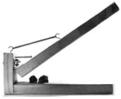
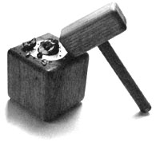
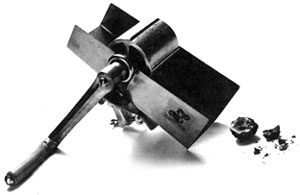
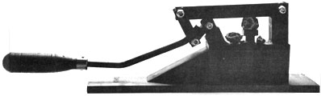
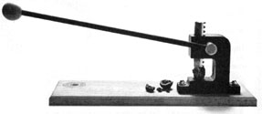
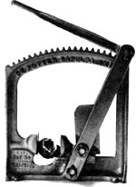

When you're dealing with black walnuts, you need a special tool to separate the meat from the chaff.
When it comes to black walnuts, getting to the meat of the matter is easier said than done. Even veterans of autumn's first-frost foraging campaigns occasionally surrender to the sheer toughness of the walnut's wrinkled shell, after having gone to the considerable trouble of husking and cleaning the harvest.
But true walnut lovers will find a way. Some even resort to crushing the shells in a vise or pulverizing them with a sledgehammer. Of course, such direct methods often demolish both the shell and the meat.
So, in time for the nut-happy holiday cooking season, we've located and tested a half-dozen tough-nut crackers, including two you can make yourself-one based on the steel model sold by Kenneth Hyatt, and the other developed by contributor Bob La Torre. Properly used, all six devices will split stubborn shells, though some do better than others. But before you get cracking, heed this word of warning: Nuts can fracture with a force that sends fragments flying. So please, wear safety glasses.
Contributor: Bob La Torre, Arlington, Washington
Cost: Your time.
This is a homemade model designed by a cost-conscious MOTHER reader. He built it for the awesome task of cracking 50 pounds of walnuts, then passed the idea on for publication. The diagram on page 56 shows how Bob put his project together, using pieces of knot-free fir 2 X 4. If you're a black-walnut fan, we'd suggest using hardwood-cut to the same approximate dimensions-and fastening the back to the base with No. 12 screws and glue. Note that the door hinge is bolted to the upright, and a fourth bolt's been added. When trimming the handle, be sure to cut a slight bevel in its hinge end to allow it full downward movement. If you discover that the bored cups are becoming too indented, try slipping a 3/8" flat washer into each one.
Manufacturer: Blockbusters, Ukiah, CA 95482
Cost: $24.95
The most attractive of all the nutcrackers, the Wisecracker works on an old principle: Force = Mass X Acceleration. A 6-ounce oak mallet provides the mass, and you supply the acceleration. A heavy brass cup set into a 4" hardwood cube contains the force of the blow and the fragments of shell'. Frankly, we're not certain that the Wisecracker was meant to take on black walnuts, but it does a fine job on most every other nut, including small-shelled varieties, which can be rapped with the brass tip on the mallet handle.
Manufacturer: J&H Crack-All, Inc., 40866 Deerhorn Rd., Springfield, OR 97477
Cost: $29.95
If you plan on cracking black walnuts exclusively, the Crack-All may be something of a disappointment. Though the castaluminum implement is well built and easy to use, it just didn't deal with the hardest of our local "blacks" consistently or all that successfully. Part of the problem is that the height of the ribbed cracking drum must be perfectly set to do its job, yet the nuts passing beneath it vary in size. On the bright side, the tool is adjustable, comes with a handy hopper, and clamps to the edge of a bench or table. Like the others, it works very well on a variety of less obstinate nuts.
Manufacturer: Kenneth D. Hyatt, 1877 State Rt. 603, RD 4, Ashland, OH 44805
Cost: $85
Ken Hyatt is a black-walnut connoisseur who dedicated a good deal of time to developing a farm-scale walnut huller. With that project successfully behind him, he designed this structural-steel nutcracker for individual use. Its best feature is the adjustable seat, which can be threaded up or down to accept nuts from 1/2" to over 2" in diameter. The double-jointed pressure lever features a 15" handle and is effective and easy to control. The model we tested had a walnut base and pedestal, but other versions are available with common wood ($65), or without the wooden base and handle ($45).
In case you'd like to make your own cracker using Ken's design, we've furnished his plans. Note that there is some minor welding and thread-tapping involved, jobs which may have to be farmed out to a local shop if you're not equipped to handle them. You're free to make changes or substitute parts, but we'll have to warn you: It works pretty well just the way it is!
Manufacturer: Wild Nut Manufacturing Corp., P.O. Box 4386, Springfield, MO 65808
Cost: $39.95
A real cast-iron beauty, the Crack'Um is based on the principle of the machinist's arbor press. An 18" handle controls a hardened steel rack-and-pinion ram, which allows a jaw opening of 2". Model 201 comes with a hardwood base; Model 200 mounts directly to a counter surface. There's some assembly required, but the instructions are clearly written and illustrated. Once you've mastered control of the unpredictable handle, you'll find this tool is all that it's cracked up to be.
Manufacturer: Potter Walnut Cracker Co., Box 930, Sapulpa, OK 74066
Distributor: Cumberland General Store, Rt. 3, Crossville, TN 38555
Cost: $56.42
If you're serious about nuts, the cast-iron Potter is right up your alley. It retains the flavor of the early Industrial Age, but the compound action of its sturdy pressure lever and cogged slide offers commendable pressure control, and the mechanism quickly adjusts to suit any nut up to about 2" across. The jaws have upper and lower cups to accept different varieties, and are surrounded by a sheet metal fragment guard. You'll have to supply the 1 X 8 wooden base, but Potter furnishes the mounting hardware. Some would call this tool overkill; on the other hand, it won't leave even the toughest nut uncracked.
|
 |
 |
 |
|
 |
 |
 |